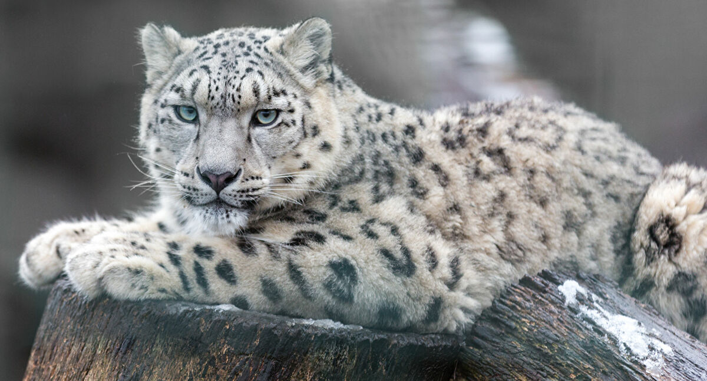
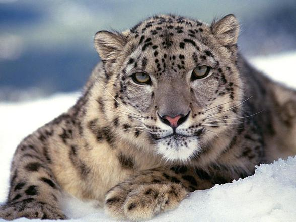

# zosiap4.github.io
Project: My favourite animal webpage
Snow leopard

Common name: Snow leopard / Irbis
Sientific Name: Panthera uncia
Type: Mammals
Size: Four to five feet with a tail up to 36 inches
Weight: 60 to 120 pounds
Habitat
Snow leopards can be found throughout high mountain ranges, including the Himalayas and the southern Siberian mountains in Russia.
They can also be found in the Tibetan Plateau and across a range that stretches from China to the mountains of Central Asia.
They prefer steep, rugged terrain with rocky outcrops where prey can be hard to come by.
Under the protection of
Protection category 1 - endangered view of the periphery of the area.
Listed in the Red Book of Russia, the IUCN Red List-96, Appendix 1 of CITES. Protected in the Sayano-Shushenskiy and Altai reserves.
Lifespan
In the wild the snow leopard lives no more than 20 years, in captivity - up to 28 years.

Some facts
- Snow leopards are very playful, love to roll in the snow.
- Their fur keeps them well insulated in cold weather - it can be 5cm long on their back and sides and almost 12cm long on their belly.
- Unlike other big cats, snow leopards can't roar. Snow leopards have a 'main' call described as a 'piercing yowl'.
- Despite being called the snow 'leopard', this big cat is more closely related to the tiger than the leopard.
- Snow leopards can travel over an incredible 25 miles in a single night.
- Some snow leopards have been known to leap up to 9 metres - 6 times their body length!